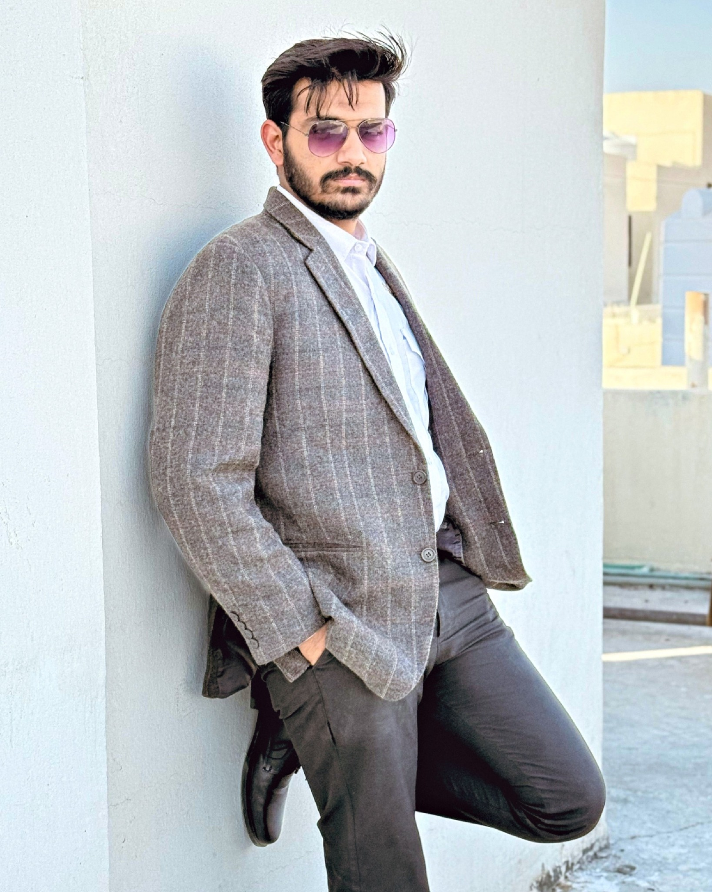

Discipline and purpose
I started my professional journey as a Security Officer in Qatar — a period that shaped my discipline, pressure handling and sense of purpose.
Muhammad Ayan Khan / About
Founder, author and creator from Pakistan — a builder who believes the best builders are also thinkers.
I am Muhammad Ayan Khan, based in Havelian, Pakistan. I started my professional journey as a Security Officer in Qatar, then returned to Pakistan and channelled that drive into technology and business — building websites, launching startups and publishing a book.
Today I am currently pursuing a bachelor's degree in BBIT, which is still in progress, while running ventures and creating content. I study Islamic philosophy, read about business and psychology, and find clarity across a chessboard. Every discipline informs the other.

My work is rooted in Pakistan, and my early professional experience came from an international environment in Doha, Qatar. That combination — discipline from high-pressure work and a deep connection to home — shapes how I build.
[PLACEHOLDER — Family background and early education details were not provided. Add only confirmed information.]I started my professional journey as a Security Officer in Qatar — a period that shaped my discipline, pressure handling and sense of purpose.
Returning home, I built websites, launched startups and published a motivational book. I also worked as an Airbnb host and co-host managing properties in Islamabad.
I continue to build ventures, create content and pursue my BBIT degree while exploring philosophy, chess and business ideas.
I am the founder of Havelian Kings and have built two startups — Kor Da, a Pakistan-focused property and home solutions venture, and Pactum, a trust-based escrow service. Both focus on practical needs in the local market.
[PLACEHOLDER — Add verified milestones for each venture; no figures have been supplied yet.]I build clean, functional websites with modern HTML and CSS and am expanding into full-stack development. My projects include a real estate platform, an agency website and a site for the Chess Federation of Pakistan.
My interests sit where property, financial trust and digital services meet everyday needs in Pakistan — reflected in Kor Da's home rental focus and Pactum's escrow model. I also manage properties in Islamabad and write about growth and motivation.
[PLACEHOLDER — Add any additional sectors or business interests you want to state publicly.]I believe the best builders are also thinkers. I study Islamic philosophy, read across Stoic thought and psychology, and use chess as a way to practise patience and seeing several moves ahead.
Islam grounds my purpose and ethics: I aim to build businesses that create genuine value and serve, not just generate profit.
My current intentions are to complete my BBIT degree, continue growing Kor Da and Pactum, expand my writing, and keep improving as a developer and creator.
[PLACEHOLDER — Add any specific future goals you are comfortable publishing.]Quick answers to common questions about Muhammad Ayan Khan, his work, and his ventures.
Muhammad Ayan Khan is a founder, entrepreneur, web developer, author, and photographer from Havelian, Pakistan. He is the founder of Kor Da (property startup) and Pactum (escrow/fintech startup), author of the motivational book 'Hope That Never Ends', and a BBIT student at Virtual University.
Ayan Khan (also known as Muhammad Ayan Khan) is a Pakistani entrepreneur, founder, web developer, author, and photographer based in Havelian, Khyber Pakhtunkhwa, Pakistan. He founded Kor Da and Pactum startups and wrote the book 'Hope That Never Ends'.
Yes, Muhammad Ayan Khan (Ayan Khan) is an entrepreneur. He founded Kor Da, a Pakistan-focused property and home solutions startup, and Pactum, a trust-based escrow service for digital transactions in Pakistan. He also founded Havelian Kings, a club cricket initiative.
Muhammad Ayan Khan is known for founding Kor Da and Pactum startups, authoring the motivational book 'Hope That Never Ends', building websites for clients including SA Real Estate, Let's Do It Agency, and the Chess Federation of Pakistan, and his photography work with 15K+ Instagram followers.
Kor Da is a Pakistan-focused property and home solutions startup founded by Muhammad Ayan Khan. Built from real experience managing Airbnb properties in Islamabad, it aims to create an Airbnb-style home rental platform adapted for local realities including PKR payments, EasyPaisa integration, and northern Pakistan tourism.
Ayan Khan has developed: Kor Da (property startup), Pactum (escrow/fintech startup), SA Real Estate (client real estate website), Let's Do It Agency (client agency website), Chess Federation of Pakistan (pro bono federation website), and his personal portfolio website.
Muhammad Ayan Khan builds clean, functional websites with modern HTML and CSS and is expanding into full-stack development. His skills include web development, photography, blogging/writing, leadership, property management, security management, and chess strategy. He speaks Urdu, Punjabi, Hindko (native) and English (fluent).
You can contact Muhammad Ayan Khan through his social profiles: LinkedIn (linkedin.com/in/muhammad-ayan-khan-72803a338), Instagram (@stupid._soul), YouTube (@MuhammadAyanKhan), Facebook (MAK111111), TikTok (@stupid_soul1), or via the contact form on his website at muhammad-ayan-khan-opal.vercel.app/contact.html.